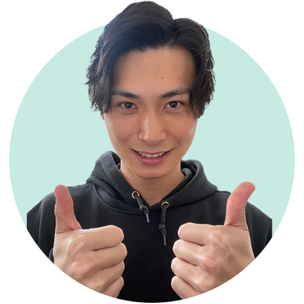
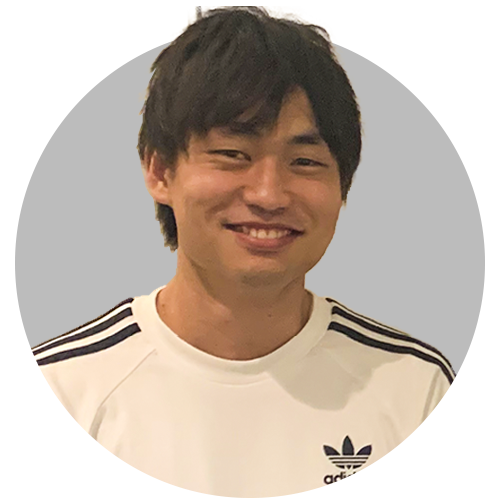

ぽんぽん本舗

Member

Interviewer


チームで決めた課題解決のテーマについて
今回、テーマを決める過程でどんな案が上がったの？
多くの人に使ってもらえるようなサービスがいいなと話しており、冷蔵庫内の在庫管理を冷蔵庫が勝手に判断してくれるという案が上がりましたね。
今回どういった経緯で課題のテーマを決めた？
自分の欲しい本を見つけられるアプリを考えました。テーマを決めた経緯として、自分が求めている本を見つけることは困難だという経験がありました。自分が調べたい項目で検索しても沢山の検索結果が返ってくると思います。その点についてまだアナログな部分があるので、自分が探してる本を簡単に見つけられたらと思い、このテーマにしました。
幅広い年齢層に使ってもらえることも今回テーマにした理由の一つです。
実際に自分が本を探す時に困った点や、もっとこうなればいいのにと思った点を活かしました。
実際にやってみて思ったこと、得たことなどありますか？
本を見つけた時におすすめの本を提案してくれるという機能を付けることになり、どの本が自分にあっているか判断してくれる時にAIを活用できるのではないかと思いました。
例えばNetflixやYouTubeでおすすめの動画が出てくるように、おすすめの本を表示するようなAIについて調べました。
例えばNetflixやYouTubeでおすすめの動画が出てくるように、おすすめの本を表示するようなAIについて調べました。
長い期間で1つのものを完成させる上で、メンバーとの関係性の重要さを学びました。

コロナ禍でのチームプロジェクトについて
コミュニケーションを取るのが難しいなかで、工夫していることはありますか？
スケジュールアプリを使ってみんなのスケジュールを可視化し、ミーティングの日程を決めています。
リモートって便利だとは思うんですが、その反面相手の反応がわかりづらく、対面で話し合いたいと思うことはあります。しかし、メンバーが相槌などリアクションを工夫してくれるので嬉しいです。
雑談を積極的に取り入れようと意識していますね。それにより関係性を築くことができ、どんなことでも発言しやすいような雰囲気になっていると思います。
直接会う機会がないので、プライベートな部分を知るために1対1のミーティングを行いました。メンバーの新たな一面を知ることができたので良い機会でした。

メンバー紹介リレー
→
コミュニケーション能力がすごく高いなと思います。途中からチームに参加したんですが、ずっと前からいたような話しやすさで、すぐに馴染んでいました。
→
リーダーを務めてくれており、人をまとめる力があって尊敬しています。僕は途中参加なのですが、最初に1対1のミーティングでチームについての説明をしてくれました。
→
真面目で、どんなことも嫌な顔一つせず取り組んでくれます。苦手なことにもしっかり取り組んでくれる人です。
→
チームの起爆剤です。アイデアマンで、自分を持っているところを尊敬しています。
→
しっかり者です。話がずれた時にしっかりと受け入れてくれた上で、話を戻してくれる。

コロナ禍の就活と就活生へのメッセージ
とにかく動くことが重要だと思います。いろんな業界を見て興味のある業界の説明会に行ってみる。何もしないのが、一番もったいないと思うんですよね。年内には自己分析・業界研究を終わらせましょう！
インターンシップや説明会など、自分の目で見ることが大切だと思います。今はコロナでできないこともありますが、地方の学生も就活しやすいなど、メリットに目を向けて頑張って欲しいです。
地方在住の学生にとって、オンラインの就活は悪いことではないと思います。距離の問題が改善され、やりたいことに向けてじっくり就活できると思います。地方から東京に行って就活をする際は、地方就活生向けにアパートを貸してくれるサービスもあるので使ってみてください！
この状況下で大変なこともあると思いますが、重く捉えすぎないで下さい。ストレスに負け、潰れてしまうともったいないです。しっかり準備して分析することで結果につながると思います。
コロナ禍で限られたことも多いと思いますが、できることも増えたと思います。オンライン説明会が主流になったことで、今まで選択肢になかった企業の説明会も気軽に参加することができます。縁やタイミングもあるので諦めずに頑張ってください。
インタビューの中で仲のいい雰囲気がひしひしと伝わってきました！
課題に関しても、みんなしっかりと意見を出し合いながら進めていることに安心しました。
この調子でどんどん進んでいって欲しいです！
課題に関しても、みんなしっかりと意見を出し合いながら進めていることに安心しました。
この調子でどんどん進んでいって欲しいです！